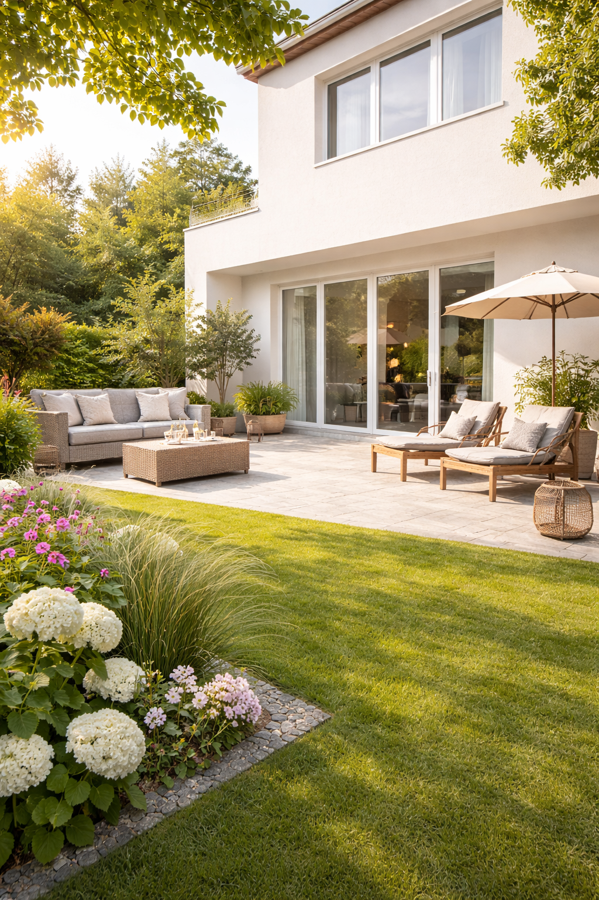
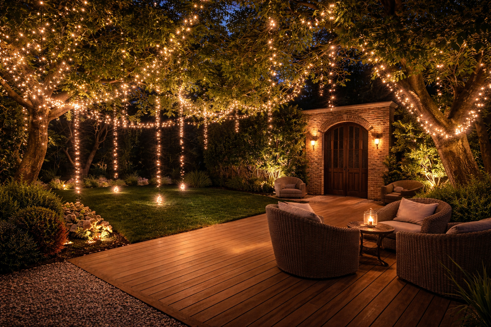

Kimlik
Gösterişten çok dengeye, kalabalıktan çok sadeliğe inanıyoruz.
İlk hedefimiz, alanın karakterini bozmadan onu daha düzenli, daha sıcak ve daha yaşanabilir hale getirmek.
Daha fazla okuÇayırova ve Kocaeli genelinde
Engin Design, yaşam alanlarını daha davetkâr ve daha dengeli hissettiren dış mekân çözümleri üretir. Bizim için iyi sonuç; sadece güzel görünmek değil, uzun süre iyi hissettirmektir.


Seçili uygulama
Akşam ışığında yaşayan bahçe atmosferiKimlik
İlk hedefimiz, alanın karakterini bozmadan onu daha düzenli, daha sıcak ve daha yaşanabilir hale getirmek.
Daha fazla okuUygulama
Işık, doku, geçiş ve kullanım rahatlığını birlikte ele aldığımız için sonuç daha tutarlı ve daha profesyonel görünür.
Hizmetleri görÇalışma Alanlarımız
Alanı daha akıcı, daha kullanışlı ve daha davetkâr hissettiren bir kurgu oluşturuyoruz.
Günlük kullanımı rahatlatan, yapıya uyumlu ve temiz çizgili çözümler hazırlıyoruz.
Malzeme geçişleri ve aydınlatma ile yapının ilk hissini daha rafine hale getiriyoruz.
Seçili Proje
Burada amaç yalnızca bir galeri göstermek değil; işçiliği, malzeme hissini ve genel atmosferi ilk bakışta anlaşılır kılmak.
Tüm Projeler